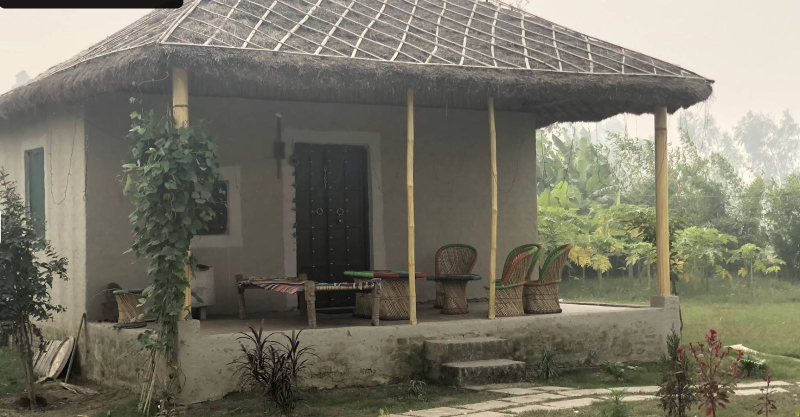
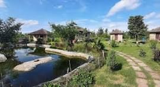
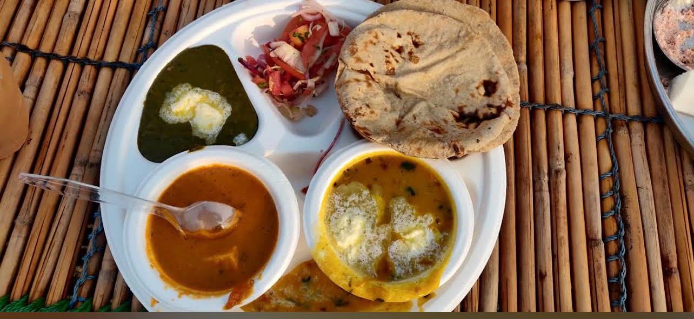
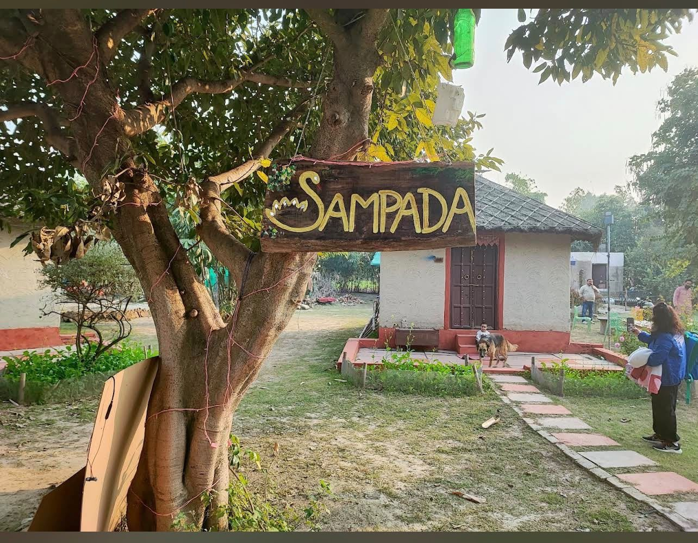

Farm Stay · Eco Resort · 45 min from Delhi NCR
Sampada Village is a handful of hand-plastered cottages set around a fish pond and a working kitchen garden — built slowly, and best visited the same way.
Welcome
Every cottage at Sampada is raised the old way — mud walls smoothed by hand, roofs thatched with dry grass, bamboo cut and lashed for the porch posts. There is a pond with a pair of resident swans, a garden that keeps the kitchen stocked, and enough quiet that you'll hear the evening before you see it.
Life at Sampada
There isn't a checklist of things to do here — mostly a handful of good places to be, at the right hour.

The CottagesWhere you sleep
Each cottage keeps its walls of mud and lime, a thatch roof pitched steep against the rain, and a porch strung with cane chairs for the hour after breakfast when nobody wants to move.

The GroundsWhere you wander
Stone paths cut between beds of marigold and seasonal vegetables, down to a pond that draws in the birdlife by evening. Beyond the boundary, mustard and wheat fields run out toward the horizon.

The KitchenWhere you eat
Meals are cooked to order and served on the communal deck — dal, seasonal saag, fresh roti off the tawa, and whatever the garden has given up that morning.

We came for one night and stayed for the quiet — the pond at dusk, the smell of the thatch roof, dinner by the fire. It felt like we'd been let in on a secret.
— From our guestbook, Sampada Village
A Closer Look
A handful of frames from mornings, evenings and everything cooked or grown in between.
Cottages are limited — write to us and we'll hold your dates.